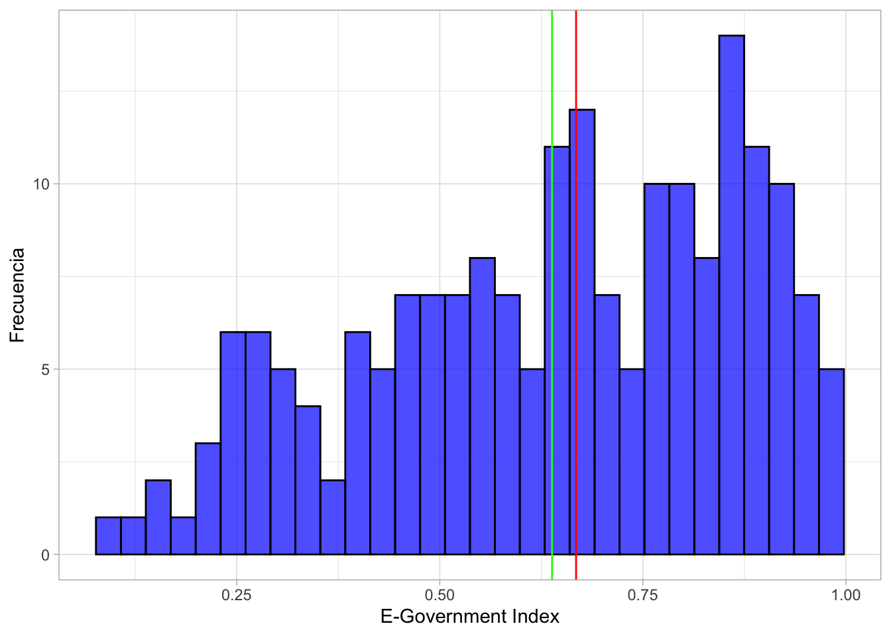
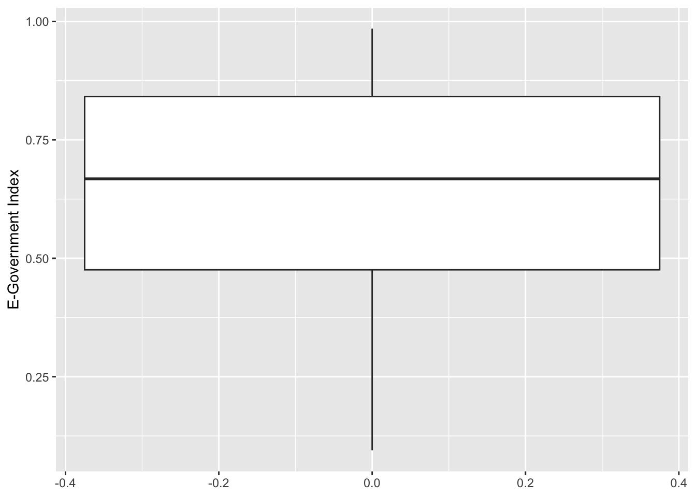
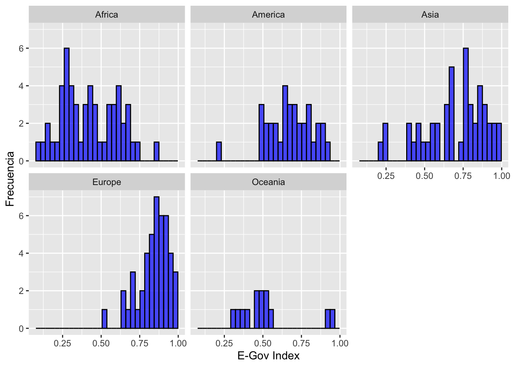
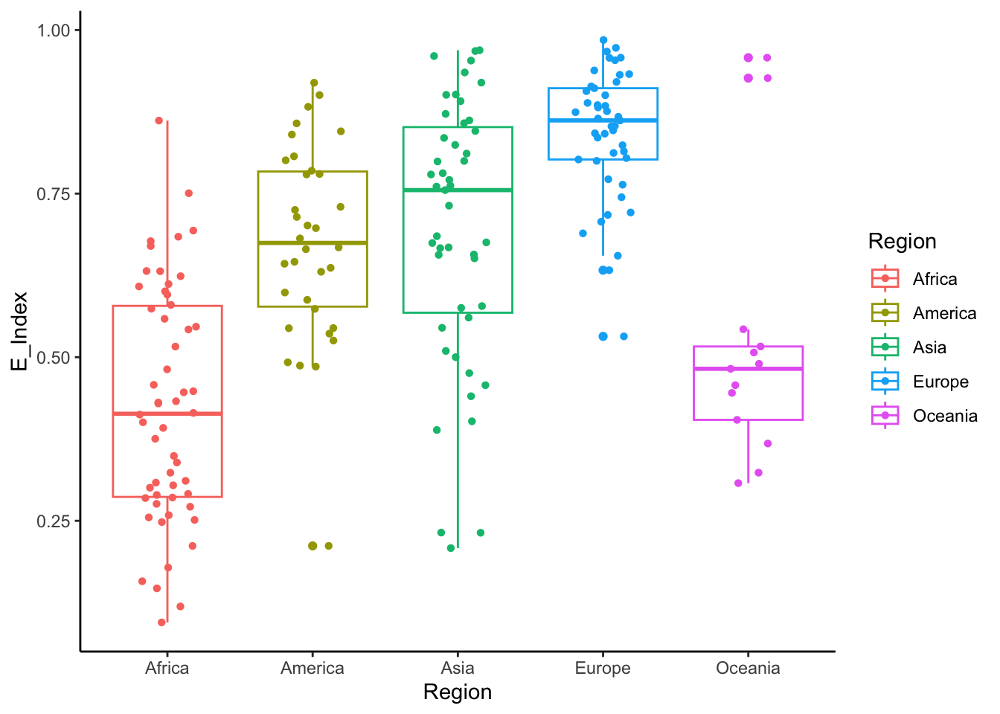

Semana 4 - Práctica Dirigida
Práctica Dirigida 3
FACULTAD DE CIENCIAS SOCIALES - PUCP
Curso: POL 278 - Estadística para el análisis político 1 | Semestre
2025 - 1
Repaso
E-Government Survey 2024: The Future of Digital Government
La Encuesta de las Naciones Unidas sobre Gobierno Electrónico se ha publicado cada dos años por el Departamento de Asuntos Económicos y Sociales de las Naciones Unidas desde 2001. La Encuesta evalúa el estado de desarrollo del gobierno electrónico de todos los Estados miembros de las Naciones Unidas y, durante este tiempo, ha establecido un conjunto de datos y análisis exhaustivos.
La evaluación mide el rendimiento del gobierno electrónico de los países en relación con los demás, en lugar de ser una medición absoluta. Reconoce que cada país debe decidir el nivel y la extensión de sus iniciativas de gobierno electrónico de acuerdo con sus propias prioridades nacionales de desarrollo y para lograr los Objetivos de Desarrollo Sostenible. La Encuesta sirve como una herramienta de referencia y desarrollo para que los países aprendan entre sí, identifiquen áreas de fortaleza y desafíos en el gobierno electrónico y moldeen sus políticas y estrategias. También tiene como objetivo facilitar e informar las discusiones de los órganos intergubernamentales, incluida la Asamblea General de las Naciones Unidas, el Consejo Económico y Social y el Foro Político de Alto Nivel.
Carguemos la data EGOV_DATA_2024.csv
library(dplyr)##
## Attaching package: 'dplyr'## The following objects are masked from 'package:stats':
##
## filter, lag## The following objects are masked from 'package:base':
##
## intersect, setdiff, setequal, unionlibrary(rio)
data=import("EGOV_DATA_2024.csv") | Nombre | Descripción |
|---|---|
| Country | Nombre del país |
| E_Index | Indicador de gobernanza digital (0-100) |
| E_Participation | Transparencia y acceso a la información, participación ciudadana en línea (0 - 100) |
| Online_Service | Servicios en línea otorgado por el Estado (0-100) |
| Human_Capital | Miembros del Estado especializados en el tema (0-100) |
| Tele_infra | Índice de capacidad de redes de telecomunicaciones como acceso a internet 5G (0-100) |
| Region | Continente del país |
1.Recordando el análisis descriptivo
- Moda: Nominales, ordinales y numéricas
- Mediana: Ordinales y numéricas
- Media: Numéricas
Revisamos la estructura de la base de datos y sus variables
str(data)## 'data.frame': 193 obs. of 9 variables:
## $ Survey Year : int 2024 2024 2024 2024 2024 2024 2024 2024 2024 2024 ...
## $ Country : chr "Iraq" "Ireland" "Israel" "Italy" ...
## $ Rank : int 148 20 23 51 96 13 89 24 109 147 ...
## $ E_Index : num 0.457 0.914 0.901 0.836 0.668 ...
## $ E_Participation: num 0.0959 0.9178 0.6986 0.6575 0.4384 ...
## $ Online_Service : num 0.188 0.877 0.854 0.762 0.568 ...
## $ Human_Capital : num 0.497 0.905 0.874 0.843 0.706 ...
## $ Tele_Infra : num 0.687 0.96 0.976 0.902 0.73 ...
## $ Region : chr "Asia" "Europe" "Asia" "Europe" ...Podemos ver que todas las variables son numéricas, menos “Country” y “Region”, que son categóricas. No obstante, la variable Survey Year (año de encuesta) no nos sirve de mucho, porque todos los datos son de 2024 y es información redundante. En ese sentido, para mayor comodidad, eliminemos la columna 1.
data=data[,-1] #Eliminamos la columna 12. Aplicación en R
¿Cuál es el estado de la gobernanza digital de los países?
¿Cómo está distribuido el indice de gobernanza digital en los países?
E-Government Index: Variable numérica
Revisamos solo la media del E_Index
data %>%
summarise(media=mean(E_Index))## media
## 1 0.6381747Ahora realizamos análisis descriptivo y de dispersión. ¿Qué podemos comentar de los datos obtenidos?
data %>%
summarise(Mínimo=min(E_Index),
Mediana= median(E_Index),
Desviación=sd(E_Index),
Media=mean(E_Index),
Máximo=max(E_Index),
Q1=quantile(E_Index, 0.25),
Q3=quantile(E_Index, 0.75))## Mínimo Mediana Desviación Media Máximo Q1 Q3
## 1 0.0947 0.66776 0.2279325 0.6381747 0.98474 0.47569 0.84153¿Cuál es el puntaje más bajo y el máximo?
¿Cuál es el rango? (max-min)
¿Cuál es el rango intercuartil? (Q3-Q1)
Desviación estándar (sd): La desviación estándar es una medida que nos ayuda a entender cuánto se separan los números en un conjunto de datos del valor promedio o medio. Podemos traducir ello como una forma de medir cuánto “se dispersan” los números alrededor de un número central.
¿Hay mucha variabilidad en los datos? sd
Visualización
Hagamos el gráfico correspondiente a la distribución del E_Index. Como es una variable numérica, el gráfico recomendado es un histograma.
library(ggplot2)
data %>%
ggplot(aes(x=E_Index))+
geom_histogram(fill = "blue",
color = "black",
bins = 30,
alpha = 0.7)+
xlab("E-Government Index") +
ylab("Frecuencia")+
theme_minimal()Ahora, hagamos un histograma de E_Index, pero incluyendo la mediana (rojo) y la media (verde)
data %>%
ggplot(aes(x=E_Index))+
geom_histogram(fill = "blue",
color = "black",
bins = 30,
alpha = 0.7)+
geom_vline(xintercept = median(data$E_Index), color = "red")+
geom_vline(xintercept = mean(data$E_Index), color = "green")+
xlab("E-Government Index") +
ylab("Frecuencia")+
theme_light()
Cuartiles y diagrama de cajas
El histograma es útil para observar la distribución y el sesgo de una variable numérica. Sin embargo, si nos consultan sobre los cuartiles que dividen esa variable, el gráfico más recomendado es el boxplot, pues nos permite observar el Q1 (límite inferior de la caja) y el Q3 (límite superior de la caja).
data %>%
summarise(CuartilesE_Index = quantile(E_Index))## Warning: Returning more (or less) than 1 row per `summarise()` group was deprecated in
## dplyr 1.1.0.
## ℹ Please use `reframe()` instead.
## ℹ When switching from `summarise()` to `reframe()`, remember that `reframe()`
## always returns an ungrouped data frame and adjust accordingly.
## Call `lifecycle::last_lifecycle_warnings()` to see where this warning was
## generated.## CuartilesE_Index
## 1 0.09470
## 2 0.47569
## 3 0.66776
## 4 0.84153
## 5 0.98474¿Cómo ubicamos los cuartiles en el diagrama de cajas?
data %>%
ggplot(aes(y=E_Index))+
geom_boxplot()+
ylab("E-Government Index")
Según región, ¿cuál es el estado de la gobernanza digital de los países?
¿Cuál es la importancia de analizar por regiones?
data %>%
group_by(Region) %>%
summarize(Media=mean(E_Index)) ## # A tibble: 5 × 2
## Region Media
## <chr> <dbl>
## 1 Africa 0.425
## 2 America 0.674
## 3 Asia 0.695
## 4 Europe 0.842
## 5 Oceania 0.518data %>%
ggplot(aes(x=E_Index))+
geom_histogram(fill="blue",
color = "black",
bins = 30,
alpha = 0.7)+
facet_wrap(~Region)+
xlab("E-Gov Index")+
ylab("Frecuencia")
Analicemos los resultados 😼
Descriptivos por región
data %>%
group_by(Region)%>%
summarise(Mínimo=min(E_Index),
Mediana= median(E_Index),
Desviación=sd(E_Index),
Media= mean(E_Index),
Máximo= max(E_Index))## # A tibble: 5 × 6
## Region Mínimo Mediana Desviación Media Máximo
## <chr> <dbl> <dbl> <dbl> <dbl> <dbl>
## 1 Africa 0.0947 0.414 0.179 0.425 0.862
## 2 America 0.212 0.675 0.150 0.674 0.919
## 3 Asia 0.208 0.755 0.203 0.695 0.969
## 4 Europe 0.532 0.862 0.0985 0.842 0.985
## 5 Oceania 0.308 0.482 0.202 0.518 0.958Comparo los resultados y los ubico en mi diagrama de cajas
data %>%
ggplot(aes(x=Region, y=E_Index, color=Region)) +
geom_boxplot() +
geom_jitter(shape=16, position=position_jitter(0.2)) +#para agregar los casos como puntos
theme_classic()
Si deseo un subset solamente de los países que están por encima de la media ¿cuántos países son?
MayorMedia=data %>%
filter(E_Index > mean(E_Index)) Si queremos ver solo una región, en este caso África
data %>%
filter(Region =="Africa") %>%
summarise(mean(E_Index))## mean(E_Index)
## 1 0.4247261O los estadísticos de los países de Asia
data %>%
filter(Region == "Asia") %>%
summarise(Mínimo=min(E_Index),
Mediana= median(E_Index),
Desviación=sd(E_Index),
Media= mean(E_Index),
Máximo= max(E_Index))## Mínimo Mediana Desviación Media Máximo
## 1 0.20827 0.75536 0.2029988 0.6954272 0.969123. Ejercicios 👾 :
- Realizar los estadísticos descriptivos del Online Service Index (Online_Service).
- Realizar una muestra de aquellos paises que están por encima de la media del índice de infraestructura y telecomunicaciones (Tele_Infra).
- Realizar diagrama de cajas del E-Participation Index (E_Participation), por región.